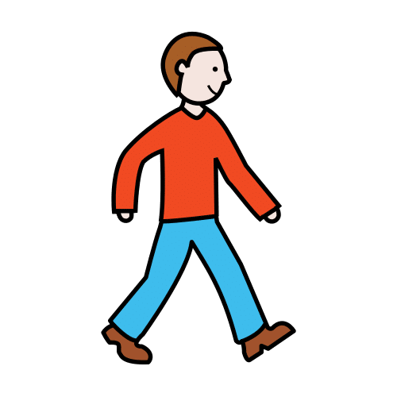
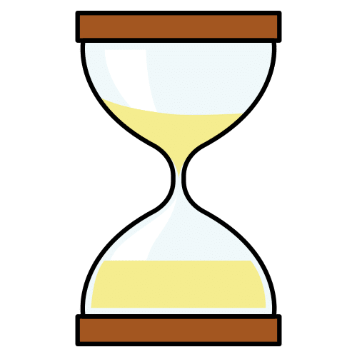
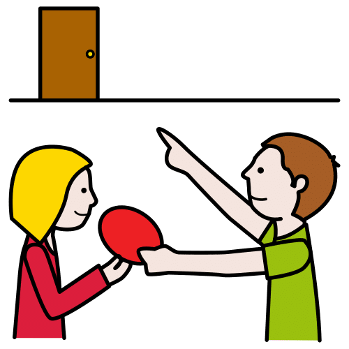
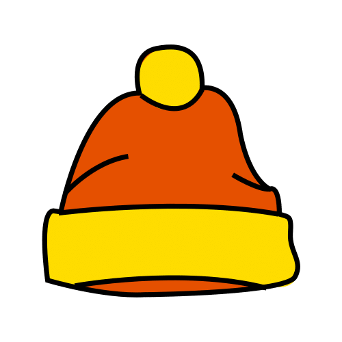

Apoyo visual · Para toda la clase
Misiones
de invierno
Encargos cortos y útiles para el alumnado con trastorno por déficit de atención e hiperactividad (TDAH) y para
toda la clase.
Pictogramas: Sergio Palao. ARASAAC (Gobierno de Aragón). CC BY-NC-SA.
Licencia CC BY-NC-SA 4.0
ideducando.es
Tres niveles2, 3 o 4pasos
Antes de empezar
De un vistazo
Una misión es un encargo corto y útil para la clase, como regar la planta o llevar un recado. Cada tarjeta enseña los
pasos con pictogramas y el tiempo, y tiene una casilla para marcar «¡Hecho!». Las misiones son de toda la clase, por
turnos. Al alumnado con TDAH le dan, además, un motivo para levantarse y una tarea que empieza y acaba.
Tres niveles: 2, 3 o 4 pasos
Una misión, en cuatro pasos
- Elige la misión y el momento.
- Dásela de cerca, con la tarjeta y una frase corta.
- Pon el reloj de misión.
- Al volver, «¡Hecho!» y dile qué ha hecho bien.
Antes, habla con tu centro. Decidid qué recados se pueden hacer fuera del aula, a qué sitios y quién
los recibe. En Infantil, mejor en pareja o con un adulto. La guía de la página
explica cómo dar cada misión y cómo retirar las ayudas.
Plantillas en blanco, pases de misión y tarjetas para pedir una misión
Plantillas y pases · Para inventar misiones y para salir del aula
Corta por la línea de puntos
Pictogramas: Sergio Palao. Origen: ARASAAC (arasaac.org). Licencia CC BY-NC-SA. Propiedad: Gobierno de Aragón. Si
pegas otros pictogramas de ARASAAC en las tarjetas en blanco, cítalos igual.
Tablero · Con velcro
Misiones de hoy
Hoy es:
Misión¿Quién? ¿Cuándo?¡Hecho!
Un círculo de velcro rugoso en cada círculo gris. El suave va detrás de cada ficha. «¿Quién?» y «¿Cuándo?» se escriben con rotulador de pizarra.
Pictogramas: Sergio Palao. Origen: ARASAAC (arasaac.org). Licencia CC BY-NC-SA. Propiedad: Gobierno de Aragón. Los
demás dibujos son de IdEducando.
Para el tablero · Para recortar
Fichas de las misiones
Una ficha por misión, con un círculo de velcro suave detrás. La forma de la esquina dice su nivel. Las cuatro en blanco
son para vuestras misiones: dibuja o pega un pictograma y escribe el nombre antes de plastificar.
Pictogramas: Sergio Palao. Origen: ARASAAC (arasaac.org). Licencia CC BY-NC-SA. Propiedad: Gobierno de Aragón.
Temporizador visual · Para recortar
Reloj de misión
Dos discos que se encajan. Al girar el blanco, el color enseña los minutos de la misión, hasta 10. Imprime en
cartulina y plastifica cada disco por separado.
Cómo se usa

Giro el disco blanco hasta mis minutos.

Hago mi misión.

Si queda color, llego a tiempo.
Cómo se monta
- Recorta los dos discos por la línea de puntos y plastifícalos.
- Corta cada disco por su línea gruesa, desde el borde hasta el punto del centro.
- Pon el blanco encima del de color, con los cortes juntos. Pasa el lado derecho del corte de color por encima del blanco.
- Gira el blanco hacia la derecha: el color aparece a partir del 0. Si sale por el otro lado, encájalos al revés.
El reloj de papel no avanza solo: gíralo tú cada minuto o al volver. Para medir el tiempo, usa el reloj de la clase, un
reloj de arena o el temporizador de la pizarra digital.
Los discos son dibujos de IdEducando. Pictogramas: Sergio Palao. Origen: ARASAAC (arasaac.org). Licencia CC BY-NC-SA.
Propiedad: Gobierno de Aragón.
Registro semanal · Una hoja por semana
Mi semana de misiones
Pictogramas: Sergio Palao. Origen: ARASAAC (arasaac.org). Licencia CC BY-NC-SA. Propiedad: Gobierno de Aragón. Las
estrellas y los relojes son de IdEducando.
Para el adulto · Una hoja cada dos semanas
Registro de misiones y ayudas
La escalera de las ayudas
← Más ayudaMás autonomía →
Cuándo subir un peldaño: cuando le salga con la misma ayuda en 4 de sus 5 últimas misiones. Si deja de
salir, vuelve al peldaño anterior sin darle importancia. Apunta la letra de la ayuda que ha necesitado.
| Día |
Misión |
Nivel |
Ayuda (A a E) |
¿A tiempo? |
Lo que ha hecho bien |
Solo iniciales, sin el diagnóstico. Guarda el registro en el centro y no le hagas fotos con tu móvil.
Guía para el docente
Misiones de invierno: cómo darlas y cómo retirar las ayudas
Una misión es un encargo corto y útil para la clase, con pocos pasos, un tiempo y una casilla para marcar «¡Hecho!». Al
alumnado con trastorno por déficit de atención e hiperactividad (TDAH) le da un motivo para moverse con permiso y una
tarea que empieza y acaba. Como las misiones son de toda la clase, quien más las necesita no destaca.
Por qué ayudan
-
Gestión de la conducta en el aula. Es un tratamiento bien establecido para el TDAH en Primaria (Evans
y otros, 2014): el docente cambia lo que pasa después de cada conducta, con elogios, recompensas o una tarjeta diaria
(CDC, 2026a). La Academia Americana de Pediatría (AAP) recomienda, como parte del tratamiento, la formación de las
familias o las intervenciones de conducta en el aula desde los 4 años, y de los 6 a los 11, mejor las dos (Wolraich y
otros, 2019).
-
Moverse con permiso. La Región de Murcia pide aplicar «estrategias que legitimen el movimiento», como
rutinas breves en el pasillo o en el patio, y propone darle tareas de apoyo durante las explicaciones, como encargarse
de los materiales audiovisuales (Resolución de 30 de julio de 2019, anexo IV). El Instituto Nacional para la
Excelencia en la Salud y la Atención del Reino Unido (NICE) pone como ejemplo los ratos de atención más cortos, con
pausas para moverse, y las indicaciones orales apoyadas por escrito (NICE, 2018).
-
Moverse no siempre distrae. En un estudio de laboratorio con 29 chicos con TDAH de 8 a 12 años, los
ratos en que más se movían hacían mejor una tarea de memoria de trabajo. En los chicos sin TDAH pasaba un poco lo
contrario (Sarver y otros, 2015).
-
Un reloj a la vista. Con 44 niños y niñas de 7 a 9 años, un reloj visual redujo la ansiedad antes de
una prueba y la desatención durante ella, sobre todo con más rasgos de TDAH. Las notas no cambiaron (Hallez y Vallier,
2025).
-
Lo que no sabemos. Las misiones, como conjunto, no se han estudiado: juntan apoyos con respaldo. Lo
que no lleva fuente en esta guía es propuesta de IdEducando.
Cómo dar una misión
Con los pasos que proponen los Centros para el Control y la Prevención de Enfermedades de Estados Unidos (CDC) para dar
indicaciones (CDC, 2026b):
- Acércate, di su nombre y busca su mirada. Con los más pequeños, ponte a su altura.
-
Dale la tarjeta y dile la misión en una frase: «Riega la planta, por favor». Mejor que una pregunta como «¿Quieres
regar?». Si puede ser, que elija entre dos misiones.
- Comprueba que lo ha entendido: que te diga o te señale los pasos (CDC, 2026a). Después, gira el reloj de misión.
-
Al volver, que marque «¡Hecho!» y dile qué ha hecho bien: «Has dejado un estuche en cada mesa». En los estudios que
revisaron Royer y otros (2019), el elogio que nombra la conducta aumentó el tiempo dedicado a la tarea y redujo las
conductas inadecuadas.
Cuándo darla
-
Antes de que cueste. Si tras un rato sentado empieza a moverse mucho, planifica la misión para ese
momento y apúntala en «¿Cuándo?». Murcia pide cambiarle de tarea más a menudo y permitir breves descansos.
-
Entre dos tareas y con aviso: «Primero acabas estas sumas y después riegas la planta». Los CDC
aconsejan avisar antes de cada cambio de actividad (CDC, 2026a).
-
Cuando la pide con su tarjeta «¿Me das una misión?». NICE pone como ejemplo unas tarjetas parecidas
para pedir un descanso. Si no es el momento, dile cuándo.
-
Nunca como salida. Si la misión llega justo después de una rabieta o de negarse a trabajar, puede
aprender que así sale de la tarea.
-
Si es toda la clase la que necesita moverse, mejor una pausa activa. La conducta en el aula mejoró
tras pausas intensas de unos 5 minutos o moderadas de más de 10 (Daly-Smith y otros, 2018).
Tres niveles para toda la clase
El Diseño Universal para el Aprendizaje (DUA) propone ajustar el reto y el apoyo, y dar opciones para elegir (CAST,
2024, consideraciones 8.2 y 7.1). Nivel 1, círculo, 2 pasos; nivel 2, cuadrado, 3 pasos; nivel 3, rombo, 4 pasos.
- Empieza por un nivel que le salga casi siempre. Sube cuando haga sus misiones solo con la tarjeta.
-
En pareja, uno lleva la tarjeta y otro el pase: sirve para los recados en Infantil y para aprender juntos
(consideración 8.3).
-
Para quien aún no lee, los pictogramas: la primera vez, leed la tarjeta juntos. Con más reto, que invente una misión
con la plantilla y la explique a la clase.
Cómo retirar las ayudas
El cambio se mantiene cuando se retiran poco a poco las ayudas añadidas y entran en juego las consecuencias naturales
(Evans y otros, 2014). Aquí, el «gracias» de la clase o la planta que sigue verde.
-
La escalera de la página va de «Lo hacemos juntos» a «Sin
apoyo». El criterio de 4 de 5 misiones es propuesta nuestra: ajústalo a cada peque.
- El tiempo: primero giras tú el reloj, después lo gira él o ella, y al final basta el reloj de la clase.
-
El registro pasa de tus manos a las suyas. En un estudio con cuatro alumnos de Primaria, la mejora se
mantuvo al cambiar el registro del docente por el suyo propio (Miller y otros, 2015).
- El elogio: primero en cada misión, después en algunas.
Seguridad
- Recados, solo dentro del colegio, a sitios que conoce y con el pase. Avisa a quien lo recibe.
- Nada de productos de limpieza ni de cosas calientes, y nadie se sube a una silla. La bayeta, solo con agua.
Convivencia y privacidad
- Las misiones rotan por toda la clase y nunca se quitan como castigo.
- El tablero y la hoja semanal no hablan del diagnóstico. El registro, solo con iniciales.
Con otros materiales de IdEducando
Con
Mi tarjeta de ida y vuelta, una
misión puede entrar en uno de sus tres objetivos, como «Sigo con mi tarea hasta el final», y la familia lo celebra en
casa. En
Rutinas de invierno en el cole están
el panel del tiempo y el cartel de objetos perdidos que usan dos misiones. Si es toda la clase la que necesita moverse,
Pausas activas para todos.
Para las familias
Misiones de invierno, también en casa
En clase hacemos misiones: encargos cortos y útiles, como regar la planta o repartir el material. Cada misión tiene sus
pasos con dibujos, un tiempo y una casilla para marcar «¡Hecho!». Las hace toda la clase, por turnos.
Una misión da un motivo para moverse y una tarea que empieza y acaba. Puede ayudar a muchos niños y niñas, también a
quienes tienen trastorno por déficit de atención e hiperactividad (TDAH).

Cómo dar una misión en casa
- Acercaos, decid su nombre y buscad su mirada.
- Decid la misión en una frase corta: «Pon las servilletas, por favor».
- Pedidle que os cuente los pasos, o enseñadle una tarjeta.
- Al terminar, decidle qué ha hecho bien: «Has puesto una servilleta en cada sitio».

Misiones de invierno para casa
La hoja «Mi semana de misiones»
Los viernes la llevará a casa. Miradla juntos, celebrad las estrellas y firmad en «La familia lo ha visto». Si un día
no sale una misión, probad con menos pasos o hacedla juntos. Mañana, otra oportunidad.
Misiones de invierno. IdEducando, noviembre de 2026. Licencia CC BY-NC-SA 4.0. Los símbolos
pictográficos utilizados son propiedad del Gobierno de Aragón y han sido creados por Sergio Palao para ARASAAC
(https://arasaac.org), que los distribuye bajo Licencia Creative Commons BY-NC-SA.
Fuentes y créditos
De dónde sale este material
Misiones de invierno. Equipo IdEducando, noviembre de 2026.
ideducando.es/material-gratuito/misiones-invierno. Fuentes consultadas el 8/11/2026.
El TDAH en el aula
-
Evans, S. W., Owens, J. S. y Bunford, N. (2014). Evidence-based psychosocial treatments for children and adolescents
with attention-deficit/hyperactivity disorder. Journal of Clinical Child and Adolescent Psychology, 43(4),
527-551. DOI: 10.1080/15374416.2013.850700
-
Wolraich, M. L. y otros (2019). Clinical practice guideline for the diagnosis, evaluation, and treatment of
attention-deficit/hyperactivity disorder in children and adolescents. Pediatrics, 144(4), e20192528. DOI:
10.1542/peds.2019-2528
-
National Institute for Health and Care Excellence (2018, actualizada en 2019). Attention deficit hyperactivity
disorder: diagnosis and management (NG87). Apartado «Terms used in this guideline». nice.org.uk
-
Resolución de 30 de julio de 2019 de la Dirección General de Atención a la Diversidad y Calidad Educativa, por la
que se dictan instrucciones para la identificación y la respuesta educativa a las necesidades del alumnado que
presenta dificultades de aprendizaje. Boletín Oficial de la Región de Murcia (BORM) n.º 184, de 10 de agosto de 2019,
anexo IV, págs. 25060 y 25061.
-
Centers for Disease Control and Prevention (2026a). ADHD in the Classroom. Actualizada el 21 de octubre de
2026. cdc.gov/adhd
-
Centers for Disease Control and Prevention (2026b). Steps for Giving Good Directions. Actualizada el 30 de
abril de 2026. cdc.gov/parenting-toddlers
Movimiento y tiempo
-
Sarver, D. E. y otros (2015). Hyperactivity in attention-deficit/hyperactivity disorder (ADHD): Impairing deficit or
compensatory behavior? Journal of Abnormal Child Psychology, 43(7), 1219-1232. DOI: 10.1007/s10802-015-0011-1
-
Daly-Smith, A. J. y otros (2018). Systematic review of acute physically active learning and classroom movement breaks
on children's physical activity, cognition, academic performance and classroom behaviour: understanding critical
design features. BMJ Open Sport & Exercise Medicine, 4(1), e000341. DOI: 10.1136/bmjsem-2018-000341
-
Hallez, Q. y Vallier, V. (2025). Time on their side: How visual timers affect anticipatory anxiety, performance, and
on-task behavior in elementary math assessments. European Journal of Investigation in Health, Psychology and
Education, 15(12), 243. DOI: 10.3390/ejihpe15120243
Elogio, autonomía y DUA
-
Royer, D. J., Lane, K. L., Dunlap, K. D. y Ennis, R. P. (2019). A systematic review of teacher-delivered
behavior-specific praise on K-12 student performance. Remedial and Special Education, 40(2), 112-128. DOI:
10.1177/0741932517751054
-
Miller, L. M. y otros (2015). Self-monitoring as a viable fading option in check-in/check-out. Journal of School
Psychology, 53(2), 121-135. DOI: 10.1016/j.jsp.2014.12.004
-
CAST (2024). Universal Design for Learning Guidelines version 3.0, consideraciones 7.1, 8.2 y 8.3.
udlguidelines.cast.org
Pictogramas, dibujos y licencia
Los pictogramas son de ARASAAC, el Centro Aragonés para la Comunicación Aumentativa y Alternativa. Su licencia pide
citar este texto: «Los símbolos pictográficos utilizados son propiedad del Gobierno de Aragón y han sido creados por
Sergio Palao para ARASAAC (https://arasaac.org), que los distribuye bajo Licencia Creative Commons BY-NC-SA». Con
pictogramas de ARASAAC, este material no se puede vender: es gratis y lo será siempre. Los demás dibujos y el diseño
son de IdEducando. Licencia CC BY-NC-SA 4.0: puedes copiarlo y adaptarlo citando a IdEducando, sin fines comerciales y
con la misma licencia.